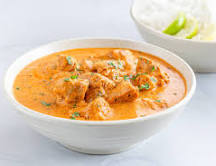

Butter-Chicken

Description
Tender and juicy chicken thanks to a deliciously spiced yogurt marinade, Butter Chicken is ridiculously easy to make. The curry sauce is out of this world!
I know you all love food with beautiful, bold flavours, and nothing beats sitting down to a good great curry to finish off a chaotic day. The aromas alone transport you to a completely different world.
The best part about cooking up Butter Chicken at home is the ingredients list. Every ingredient is easy to find from any grocery store or supermarket.
Ingredients
For the chicken marinade:
- 28 oz (800g) boneless and skinless chicken thighs or breasts cut into bite-sized pieces
- 1/2 cup plain yogurt
- 1 1/2 tablespoons minced garlic
- 1 tablespoon minced ginger (or finely grated)
- 2 teaspoons garam masala
- 1 teaspoon turmeric
- 1 teaspoon ground cumin
- 1 teaspoon red chilli powder
- 1 teaspoon of salt
For the sauce:
- 2 tablespoons olive oil
- 2 tablespoons ghee (or 1 tbs butter + 1 tbs oil)
- 1 large onion, sliced or chopped
- 1 1/2 tablespoons garlic, minced
- 1 tablespoon ginger, minced or finely grated
- 1 1/2 teaspoons ground cumin
- 1 1/2 teaspoons garam masala
- 1 teaspoon ground coriander
- 14 oz (400 g) crushed tomatoes
- 1 teaspoon red chili powder (adjust to your taste preference)
- 1 1/4 teaspoons salt (or to taste)
- 1 cup of heavy or thickened cream (or evaporated milk to save calories)
- 1 tablespoon sugar
- 1/2 teaspoon kasoori methi (or dried fenugreek leaves)